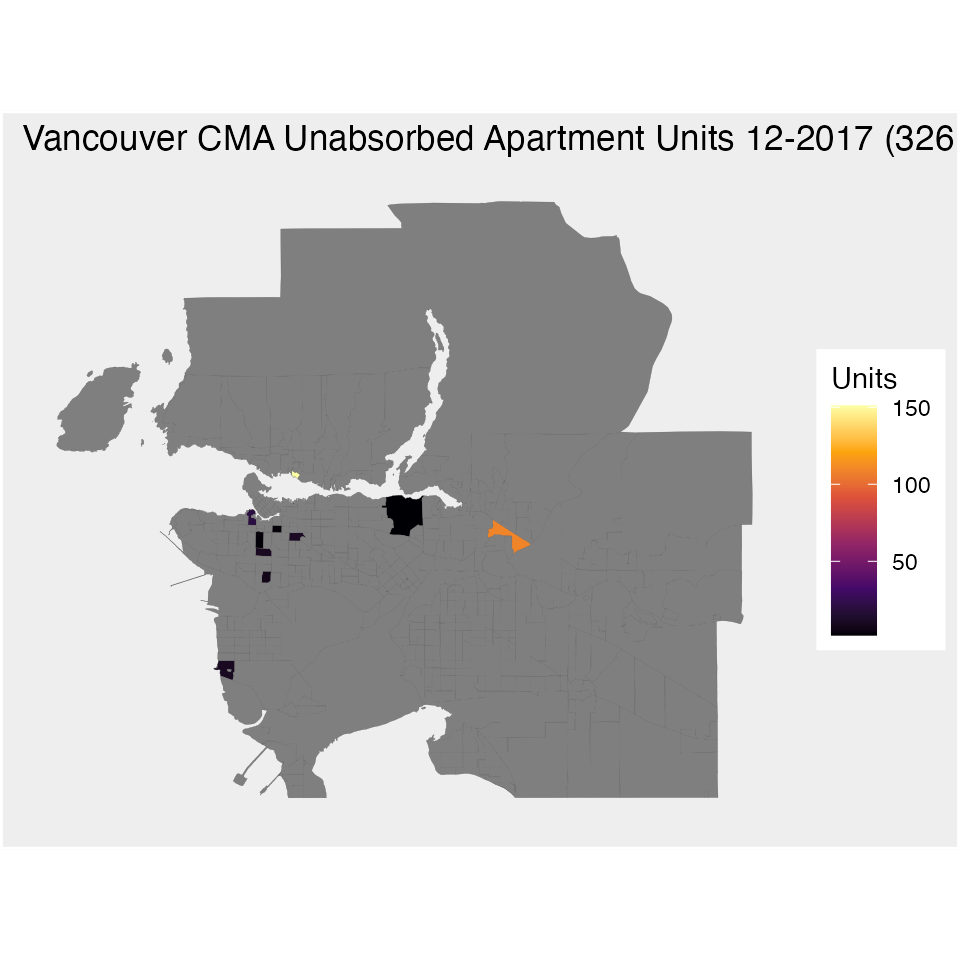
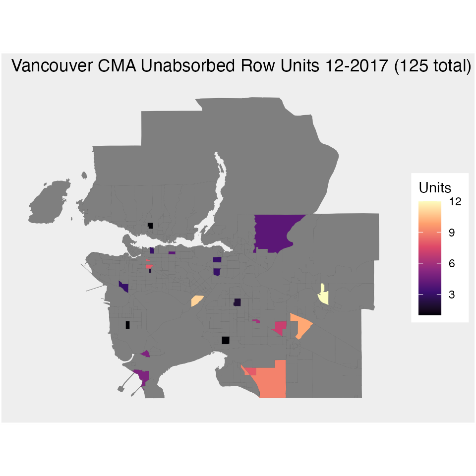
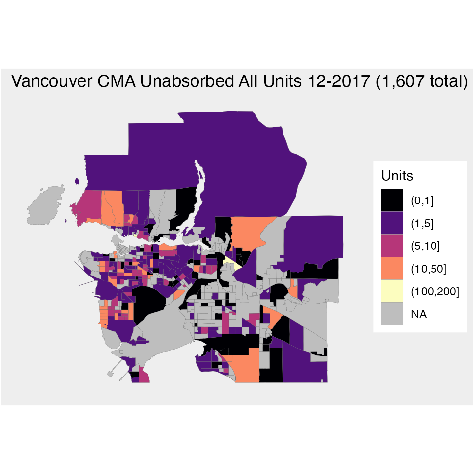
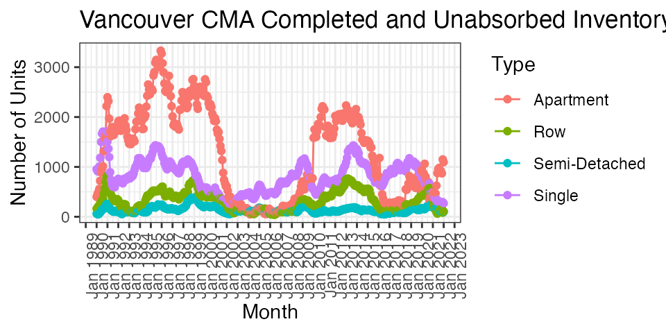

Unabsorbed.Rmd
library(dplyr)
library(tidyr)
library(ggplot2)
#devtools::install_github("mountainmath/cmhc")
library(cmhc)
cma="Vancouver"
year=2017
month=12
breakdown_geography_type='CT'
table_id=paste0(cmhc_table_list["Scss Unabsorbed Inventory Base"], ".9")
census_cma=census_geography_list[[cma]]
cma_header=substr(census_cma, nchar(census_cma)-2,nchar(census_cma))
#get all under construction data for Vancouver and pad CT GeoUIDs.
unabsorbed <- get_cmhc(cmhc_snapshot_params(
geography_id = cmhc_geography_list[[cma]],
breakdown_geography_type = breakdown_geography_type,
table_id=table_id,
year = year,
month = month)) %>%
rename(GeoUID = X1)
if (breakdown_geography_type=="CT") {
census_cma=census_geography_list[[cma]]
cma_header=substr(census_cma, nchar(census_cma)-2,nchar(census_cma))
unabsorbed <- unabsorbed %>% mutate(GeoUID = cmhc_geo_uid_for_ct(cma_header,GeoUID))
}
bg_color="#eeeeee"
theme_opts<-list(theme(panel.grid.minor = element_blank(),
#panel.grid.major = element_blank(), #bug, not working
panel.grid.major = element_line(colour = bg_color),
panel.background = element_rect(fill = bg_color, colour = NA),
plot.background = element_rect(fill=bg_color, size=1,linetype="solid"),
axis.line = element_blank(),
axis.text.x = element_blank(),
axis.text.y = element_blank(),
axis.ticks = element_blank(),
axis.title.x = element_blank(),
axis.title.y = element_blank()))After defining a basic theme we can go ahead and map the data.
type="Apartment"
geos[[type]][geos[[type]]==0] <- NA
ggplot(geos) +
geom_sf(aes_string(fill = type), size = 0.05) +
scale_fill_viridis_c("Units", option="inferno") +
ggtitle(paste0(cma, " CMA Unabsorbed ",type," Units ",month,"-",year," (",prettyNum(sum(geos[[type]],na.rm=TRUE),big.mark = ",")," total)")) +
theme_opts
type="Row"
geos[[type]][geos[[type]]==0] <- NA
ggplot(geos) +
geom_sf(aes_string(fill = type), size = 0.05) +
scale_fill_viridis_c("Units", option = "magma") +
ggtitle(paste0(cma, " CMA Unabsorbed ",type," Units ",month,"-",year," (",prettyNum(sum(geos[[type]],na.rm=TRUE),big.mark = ",")," total)")) +
theme_opts
type="All"
geos[[type]][geos[[type]]==0] <- NA
geos$units=cut(geos$All,breaks=c(0,1,5,10,50,100,200))
ggplot(geos) +
geom_sf(aes_string(fill = "units"), size = 0.05) +
scale_fill_viridis_d("Units", option = "magma",na.value="grey") +
ggtitle(paste0(cma, " CMA Unabsorbed ",type," Units ",month,"-",year," (",prettyNum(sum(geos[[type]],na.rm=TRUE),big.mark = ",")," total)")) +
theme_opts
table="Scss Unabsorbed Inventory Time Series"
level="CMA"
cmhc_params=cmhc_timeseries_params(table_id = cmhc_table_list[table], region = cmhc_region_params(cma,level))
data <- get_cmhc(cmhc_params) %>% rename(Date=X1) %>% mutate(Date= as.Date(paste0("01 ",Date),format="%d %b %Y"))
types <- names(data)[!names(data) %in% c("Date")]
#data[is.na(data)] <- 0
plot_data=data %>% pivot_longer(all_of(types),names_to="Type",values_to="Units")
ggplot(plot_data %>% filter(Type %in% c("Row","Apartment","Single","Semi-Detached")),aes(x=Date, y=Units, color=Type, group=Type)) +
geom_path() +
geom_point() +
scale_x_date(date_breaks = "1 year",date_labels = "%b %Y") +
theme_bw() +
labs(y="Number of Units",
x="Month",
title=paste0(cma," ",level," Completed and Unabsorbed Inventory")) +
theme(axis.text.x = element_text(angle = 90, hjust = 1))